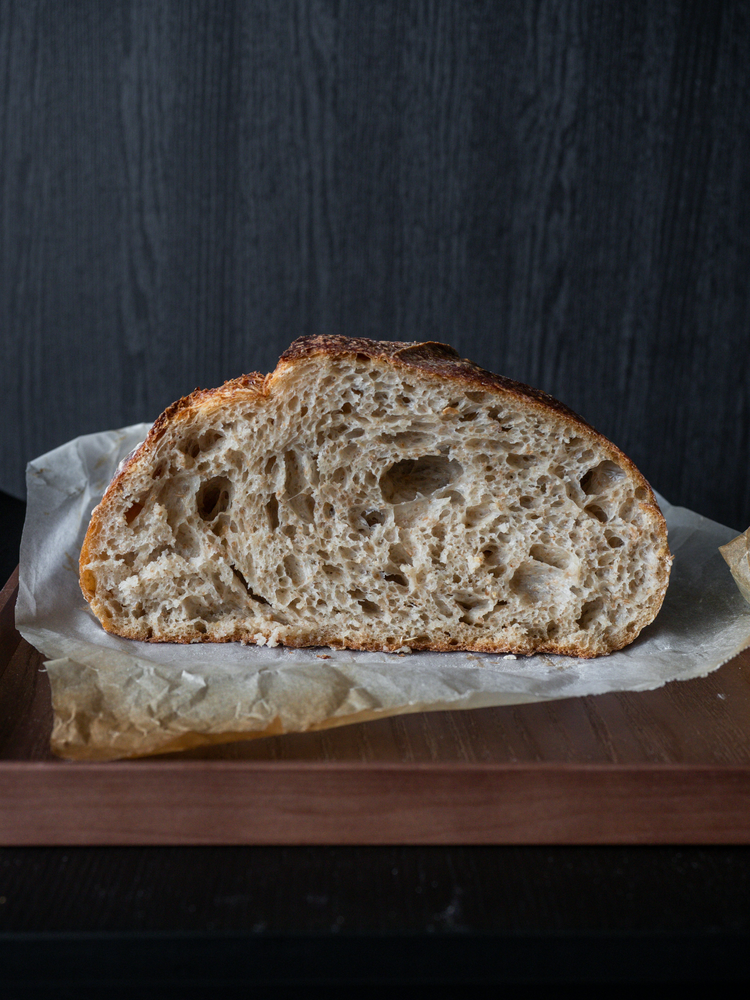

Home
Flatbread

Hearty bread made with grains that Vikings carried on their long voyage.
Ingredients
- 2 cups barley flour
- 1/2 cup water
- 1/2 teaspoon salt
- 1 tablespoon honey
- 1 tablespoon butter or lard
Instructions
- In a bowl, mix flour, salt, and honey
- Gradually add water, mixing until a dough forms.
-
Knead for a few minutes, then divide into small balls and flatten into
thin rouds
- Heat a skillet over high heat and melt butter or lard.
- Cook each loaf for 4-8 minutes per side until golden brown.